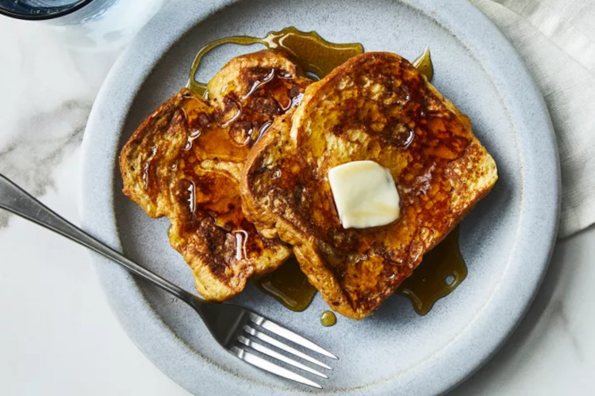

French Toast

Ingredients
- White bread
- Eggs
- Milk
- Vanilla and cinnamon
- Salt
- Butter
Steps
- Gather ingredients
- Whisk milk, eggs, vanill, cinnamon, and salt together in a shallow bowl
- Lightly butter a griddle or skillet and heat over medium-high heat
- Dunk bread in the egg mixture, soaking both sides
- Transfer to the hot skillet and cook until golde, 3 to 4 minutes per side
- Serve hot